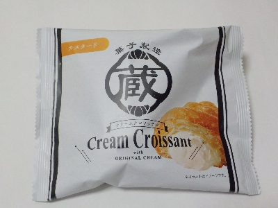
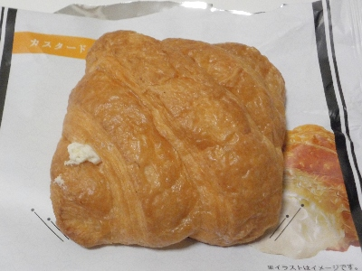
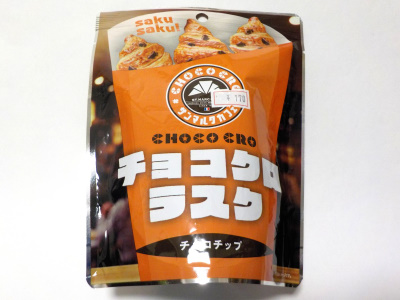

蔵屋のクリームクロワッサン（カスタード）。
2024/05/10

アルミ包装で見栄えがいいクロワッサンです。

クロワッサンは小さくて平べったくて四角です。普通のクロワッサンとちょっと違うけど、なんだかかわいい恰好です。
中のカスタードクリームがカスタードっぽくないんですけど、すっきりとした甘さで美味しかったです。
岡山県高梁市有灘2555
2024/05/10

アルミ包装で見栄えがいいクロワッサンです。

クロワッサンは小さくて平べったくて四角です。普通のクロワッサンとちょっと違うけど、なんだかかわいい恰好です。
中のカスタードクリームがカスタードっぽくないんですけど、すっきりとした甘さで美味しかったです。
2022/11/05

チョコクロってチョコがもっと入っていたと思うんですが、この商品のチョコは少ないです。でも美味しい。
甘くて香ばしい小さなクロワッサンのラスクがとっても美味しかったです。サクサクしたラスクが美味しいので、チョコが少ないくらいが丁度いいです。
この手の複数個入ったお菓子ってチャックが付いているものが多いんですが、これにはないです。でも私は一気に食べきってしまったので必要なかったです。
クロワッサンラスクって美味しいですね。